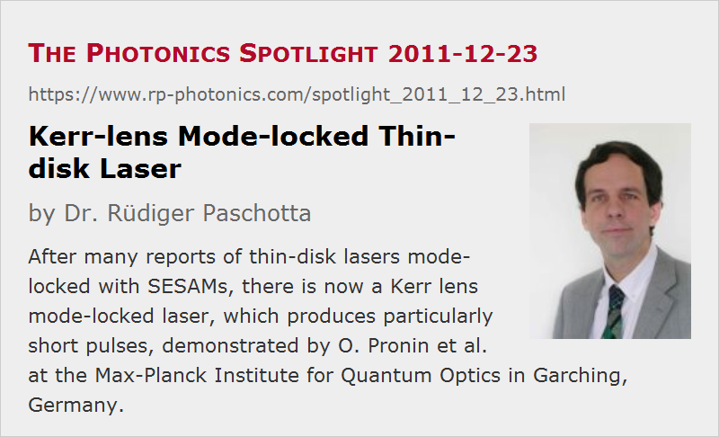

Kerr-lens Mode-locked Thin-disk Laser
Posted on 2011-12-23 (revised on 2011-12-28) as a part of the Photonics Spotlight (available as e-mail newsletter!)
Permanent link: https://www.rp-photonics.com/spotlight_2011_12_23.html
Author: Dr. Rüdiger Paschotta, RP Photonics Consulting GmbH
Abstract: After many reports of thin-disk lasers mode-locked with SESAMs, there is now a Kerr lens mode-locked laser, which produces particularly short pulses, demonstrated by O. Pronin et al. at the Max-Planck Institute for Quantum Optics in Garching, Germany.
Ref.: O. Pronin et al., “High-power 200 fs Kerr-lens mode-locked thin-disk oscillator”, Opt. Lett. 36 (24), 4746 (2011)

The history of mode-locked thin-disk lasers has a curious twist. Originally, there was a patent saying that semiconductor saturable absorber mirrors (SESAMs) would be unsuitable for mode locking of such lasers; only Kerr lens mode locking (KLM) would work. However, a research team at ETH Zürich (which I supervised at that time) then demonstrated the first mode-locked thin-disk laser exactly with a SESAM (J. Aus der Au et al., Opt. Lett. 25 (11), 859 (2000)), while the attempts of another group with Kerr lens mode locking apparently failed. 11 years later, there is now the paper by Oleg Pronin et al. at the Max-Planck Institute for Quantum Optics in Garching, Germany (see the reference above), reporting a Kerr-lens mode-locked thin-disk laser. It is based on an Yb:YAG thin-disk laser head, as are most other mode-locked thin-disk lasers so far. There is a version with KLM alone, and one which uses a (weak) SESAM in addition for self-starting mode locking and better stability.
What makes that result particularly interesting is the very short pulse duration – down to 200 fs, or 270 fs with a higher output power of up to 45 W. Previously, mode-locked thin-disk Yb:YAG lasers could only be operated with pulse durations around 700 to 800 fs, because only there we obtain a helpful effect from spatial hole burning in the disk (see R. Paschotta et al., Appl. Phys. B 72 (3), 267 (2001)). Forcing such a laser to a pulse duration like 200 fs requires a saturable absorber with larger modulation depth (because spectral filtering by the limited gain bandwidth). With a SESAM, this can lead into trouble with Q-switching instabilities and with excessive heating. KLM does not involve additional heating and may have saturation characteristics which make it easier to avoid Q-switching instabilities.
Another interesting point will be whether a Kerr lens mode-locked thin-disk laser can be sufficiently stable for making a commercial product. One may say that titanium–sapphire lasers with KLM have been sold for many years, but that alone would not be fully convincing, since (a) this is mostly for applications in research, where the demands on stability are lower than for industrial applications, and (b) the issues may be more serious for the large effective mode areas required in a high-power laser.
This article is a posting of the Photonics Spotlight, authored by Dr. Rüdiger Paschotta. You may link to this page and cite it, because its location is permanent. See also the RP Photonics Encyclopedia.
Note that you can also receive the articles in the form of a newsletter or with an RSS feed.
Questions and Comments from Users
Here you can submit questions and comments. As far as they get accepted by the author, they will appear above this paragraph together with the author’s answer. The author will decide on acceptance based on certain criteria. Essentially, the issue must be of sufficiently broad interest.
Please do not enter personal data here; we would otherwise delete it soon. (See also our privacy declaration.) If you wish to receive personal feedback or consultancy from the author, please contact him e.g. via e-mail.
By submitting the information, you give your consent to the potential publication of your inputs on our website according to our rules. (If you later retract your consent, we will delete those inputs.) As your inputs are first reviewed by the author, they may be published with some delay.
|  |
If you like this page, please share the link with your friends and colleagues, e.g. via social media:
These sharing buttons are implemented in a privacy-friendly way!